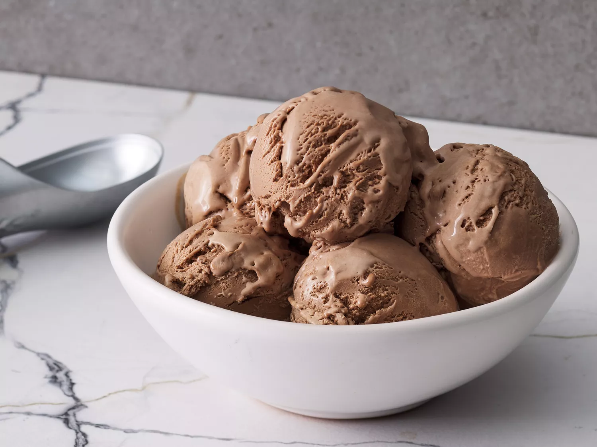

Chocolate ice cream

Description
This chocolate ice cream is a rich, custard-style ice cream flavored with semisweet chocolate and cocoa powder.
This chocolate ice cream recipe is rich, sweet, creamy, and easy to make with just eight ingredients you likely already have on hand.
Ingredients
- Milk: This easy ice cream recipe starts with a cup of milk.
- Sugar: Sweeten things up with ¾ cup white sugar.
- Cocoa powder: Unsweetened cocoa powder gives this ice cream a chocolatey base.
- Salt: A pinch of salt enhances the overall flavor, but it won’t make the ice cream taste salty.
- Egg yolks: This custard-like chocolate ice cream requires three lightly beaten egg yolks.
- Chocolate: Chopped semisweet chocolate takes the decadence up a notch.
- Heavy cream: You’ll need two cups of heavy cream.
- Vanilla: A teaspoon of vanilla extract adds complexity and enhances the flavor.
Steps
- Bring the milk, sugar, cocoa, and salt to a simmer in a saucepan.
- Whisk ½ of the milk mixture into the yolks, return to the pan, and stir until thickened.
- Remove from heat and stir in chopped chocolate.
- Refrigerate in a chilled bowl until cold.
- Add the remaining ingredients, then freeze in an ice cream maker.